| Họ và tên |
: Lê Đào Như Quỳnh |
| Mã sinh viên |
: 25080167 |
Lớp
|
: VNU1001_E252036 |
Thực hiện:
1. Mở File Explorer: Nhấn tổ hợp phím Windows + E hoặc nhấp vào biểu tượng thư mục màu vàng trên thanh tác vụ.
2. Truy cập ổ đĩa/thư mục: Ở cột bên trái, nhấp vào This PC, sau đó nhấp đúp vào một ổ đĩa không phải ổ hệ thống (ví dụ: ổ D: hoặc E:). Nếu chỉ có ổ C:, hãy vào thư mục Documents.
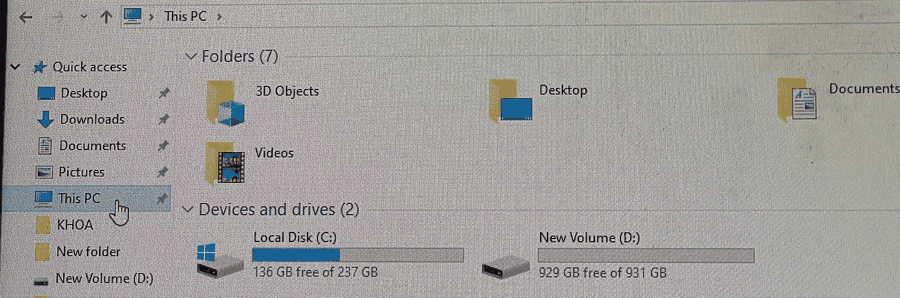
Hình ảnh từ bài tập
3. Tạo thư mục mới: Nhấp chuột phải vào một khoảng trống -> chọn New -> Folder. Đặt tên thư mục là ThucHanh_hotensinhvien (ví dụ: ThucHanh_NguyenVanA). Nhấn Enter.
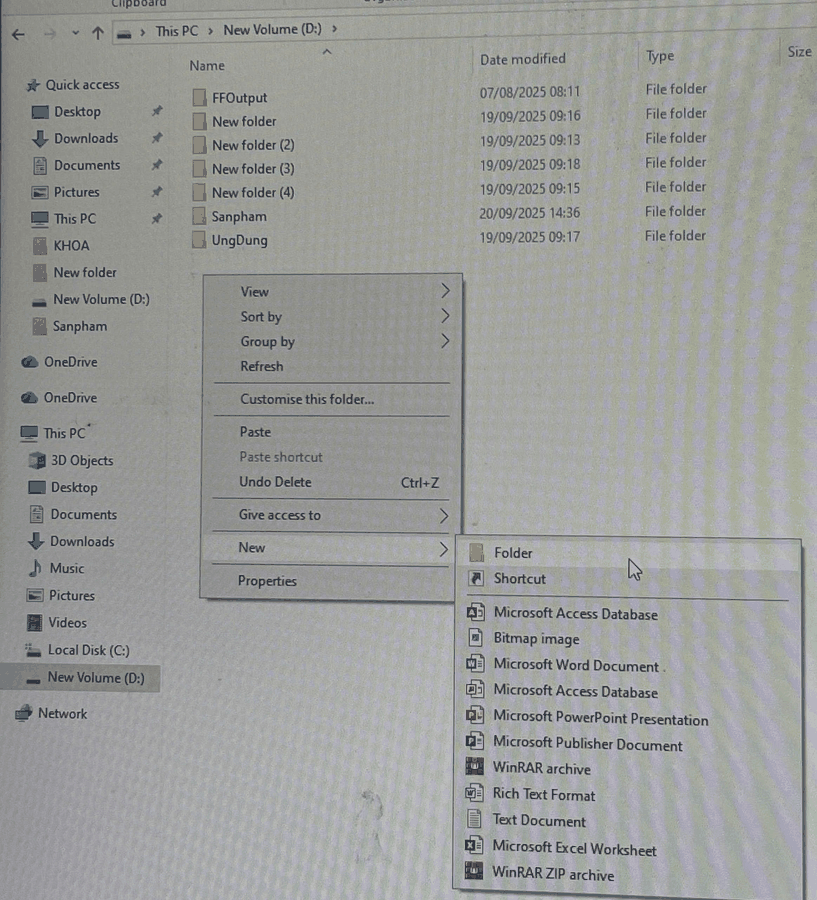
Hình ảnh từ bài tập
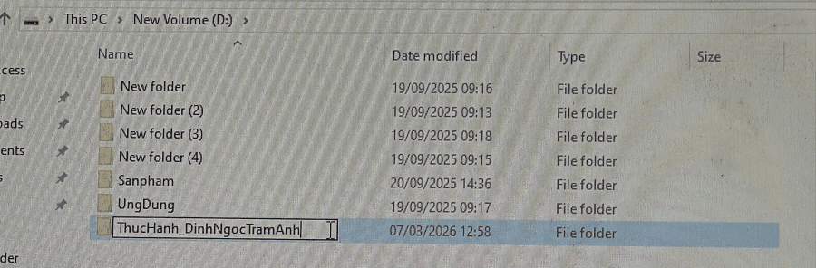
Hình ảnh từ bài tập
4. Vào thư mục vừa tạo: Nhấp đúp vào thư mục ThucHanh_NguyenVanA
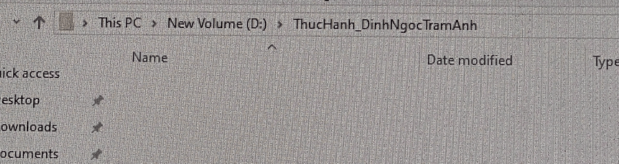
Hình ảnh từ bài tập
5. Tạo tệp tin văn bản: Nhấp chuột phải vào khoảng trống -> New -> Text Document. Đặt tên là GhiChu.txt. Nhấn Enter.
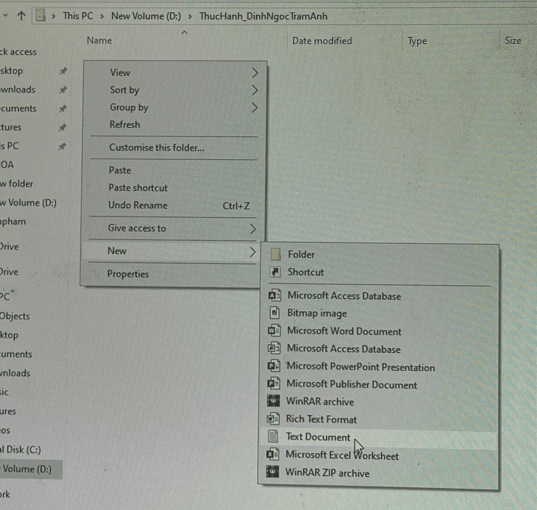
Hình ảnh từ bài tập
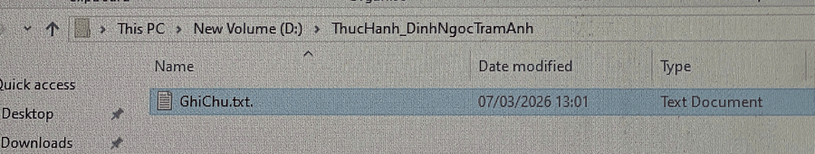
Hình ảnh từ bài tập
6. Đổi tên tệp tin: Nhấp chuột phải vào tệp GhiChu.txt -> chọn Rename. Đổi tên thành GhiChuQuanTrong.txt. Nhấn Enter.
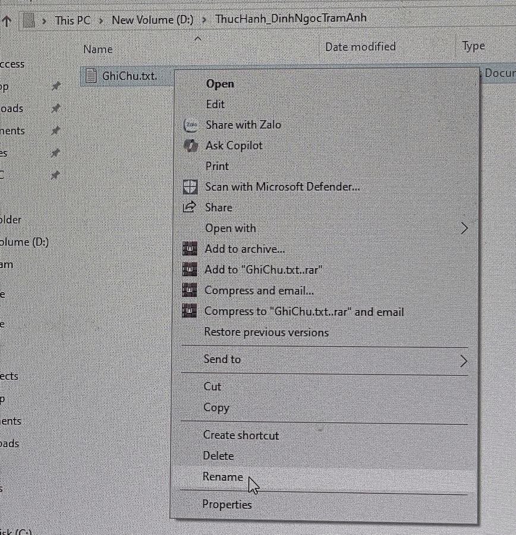
Hình ảnh từ bài tập
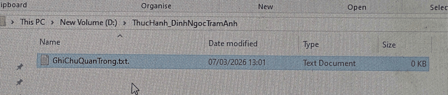
Hình ảnh từ bài tập
7. Tạo thư mục con: Trong thư mục ThucHanh_NguyenVanA, nhấp chuột phải -> New -> Folder. Đặt tên là TaiLieu.
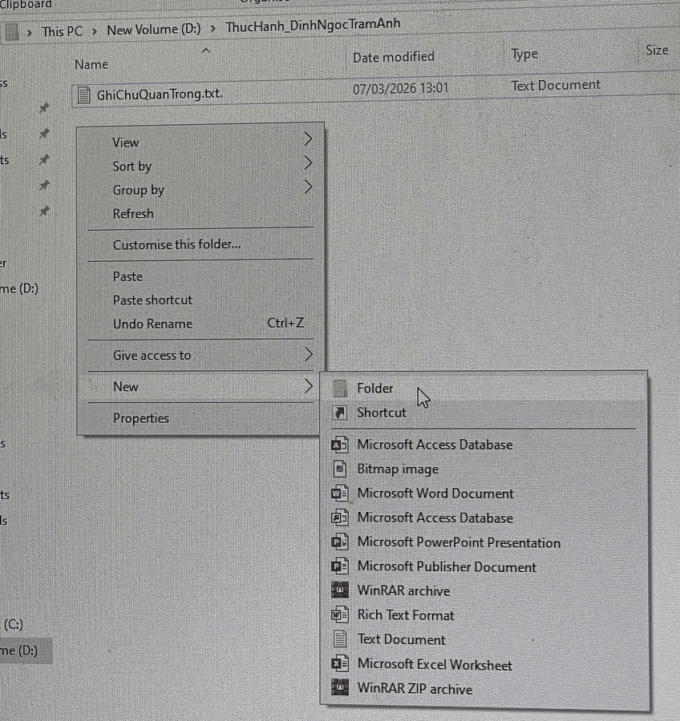
Hình ảnh từ bài tập
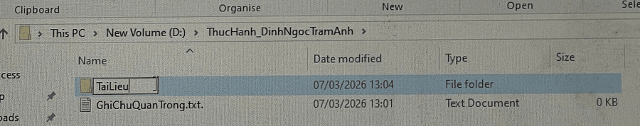
Hình ảnh từ bài tập
8. Sao chép tệp tin (Copy & Paste):
Nhấp chuột phải vào tệp GhiChuQuanTrong.txt -> chọn Copy (hoặc chọn tệp rồi nhấn Ctrl + C).
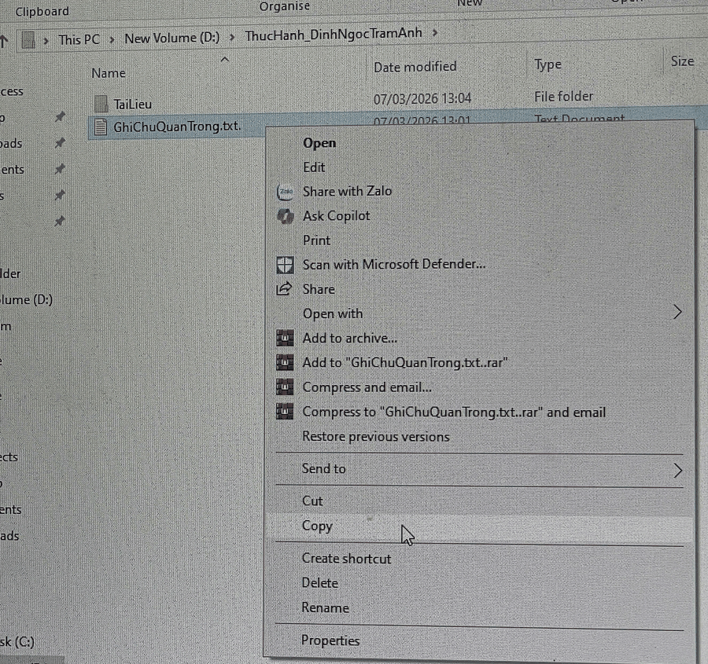
Hình ảnh từ bài tập
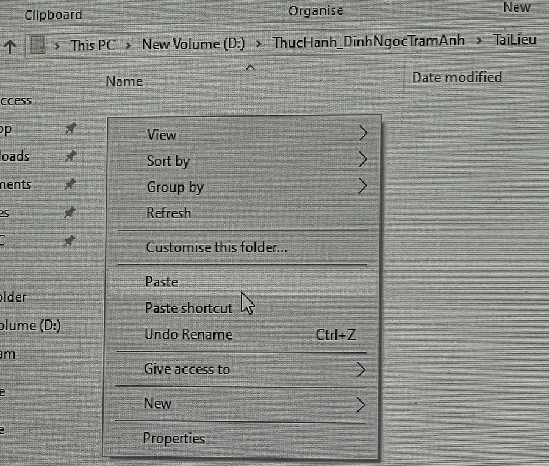
Hình ảnh từ bài tập
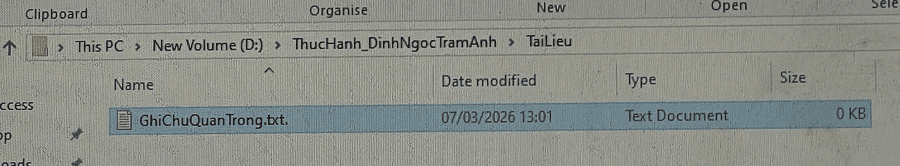
Hình ảnh từ bài tập
9. Di chuyển tệp tin (Cut & Paste):
Quay lại thư mục ThucHanh_NguyenVanA. Tạo một tệp mới tên là DiChuyen.txt.
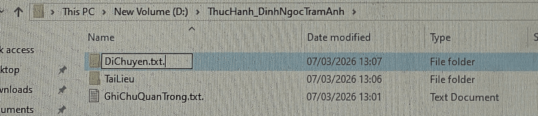
Hình ảnh từ bài tập
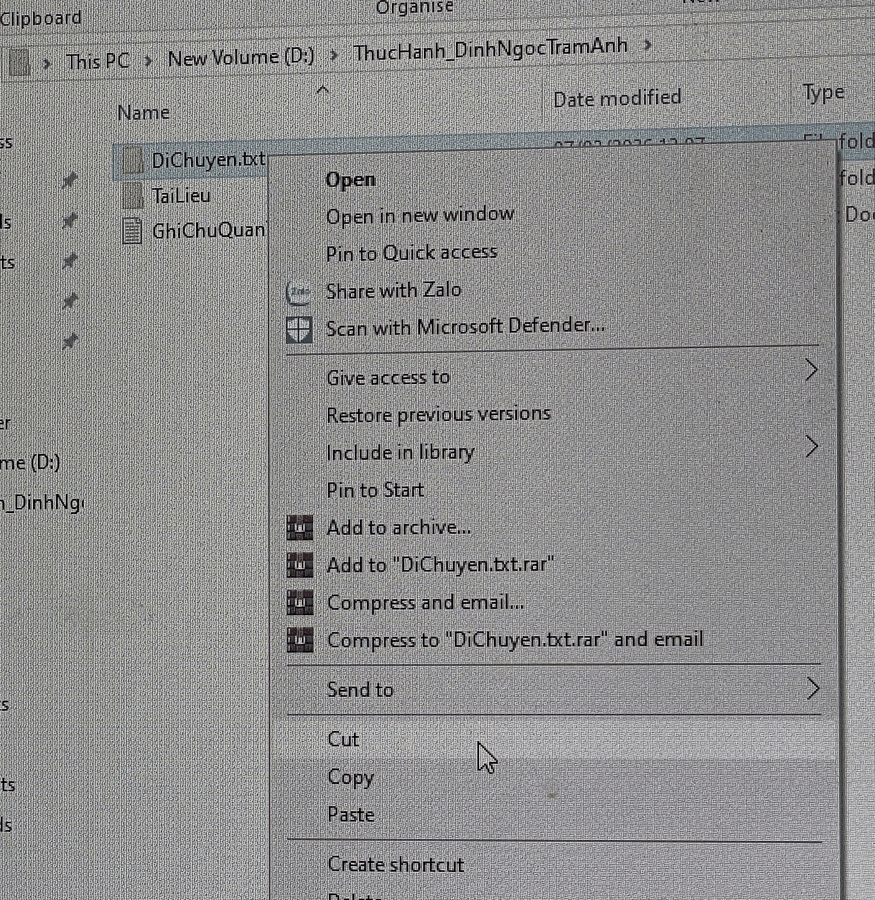
Hình ảnh từ bài tập
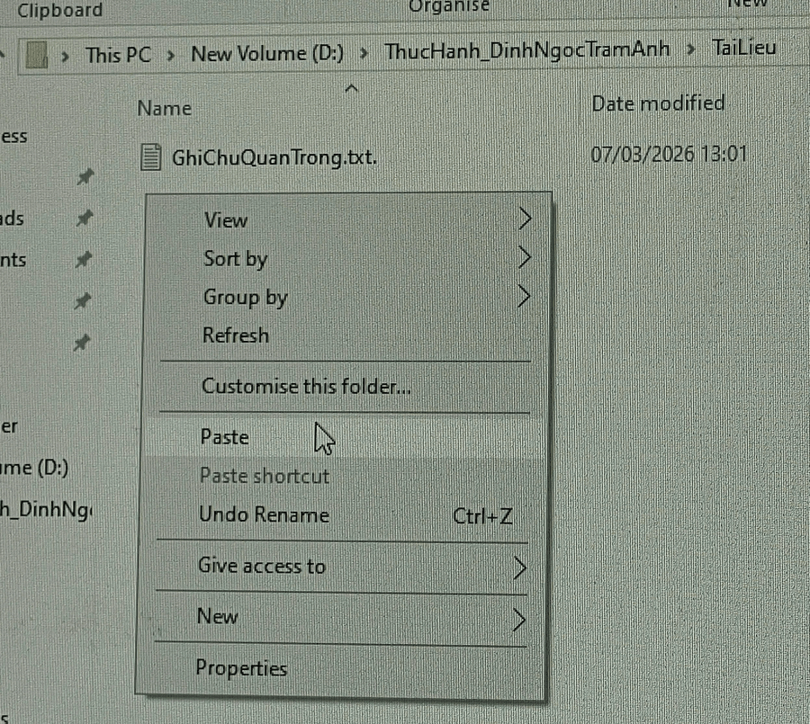
Hình ảnh từ bài tập
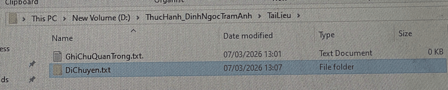
Hình ảnh từ bài tập
10. Xóa tệp tin: Trong thư mục TaiLieu, nhấp chuột phải vào tệp GhiChuQuanTrong.txt -> chọn Delete. Tệp sẽ được chuyển vào Thùng rác (Recycle Bin).
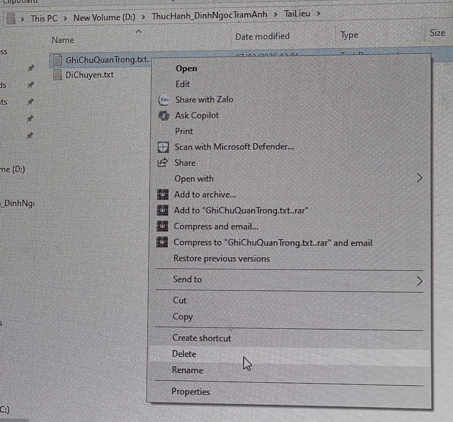
Hình ảnh từ bài tập
11. Xóa vĩnh viễn: Chọn tệp DiChuyen.txt, nhấn giữ phím Shift và nhấn phím Delete. Một cảnh báo sẽ hiện ra. Nếu đồng ý, tệp sẽ bị xóa vĩnh viễn mà không qua Thùng rác.
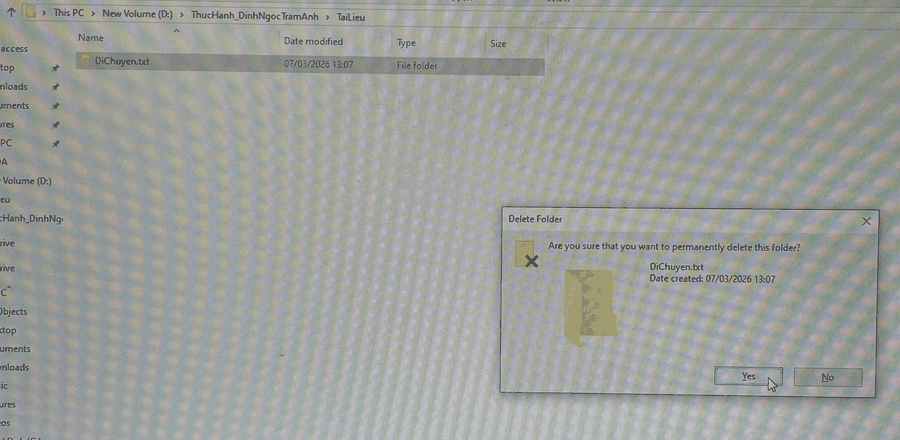
Hình ảnh từ bài tập
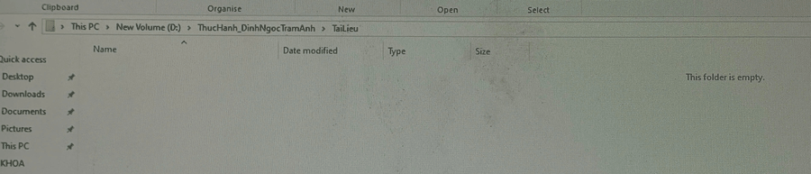
Hình ảnh từ bài tập
12. Khôi phục từ Thùng rác (Tùy chọn): Tìm biểu tượng Recycle Bin trên màn hình nền, nhấp đúp để mở. Tìm tệp GhiChuQuanTrong.txt đã xóa, nhấp chuột phải vào nó và chọn Restore. Tệp sẽ quay trở lại vị trí ban đầu.
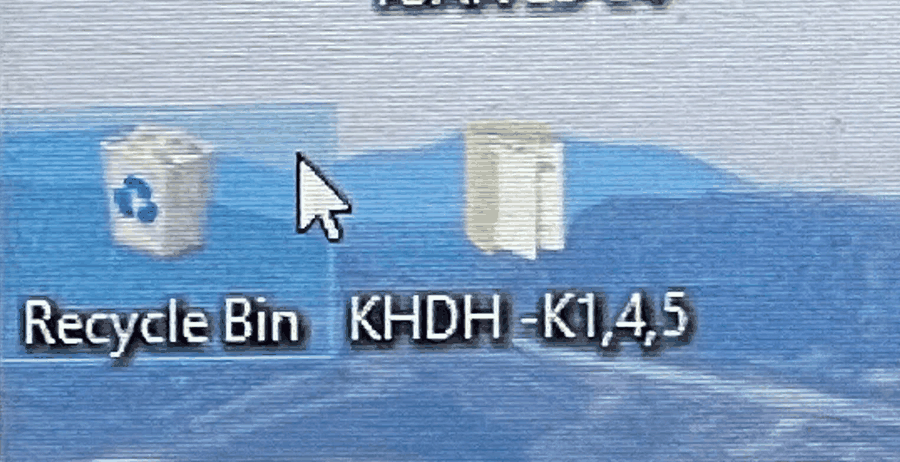
Hình ảnh từ bài tập
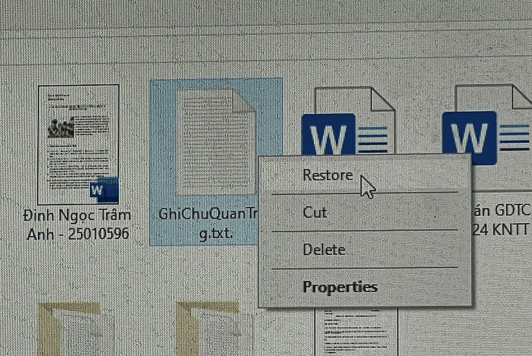
Hình ảnh từ bài tập
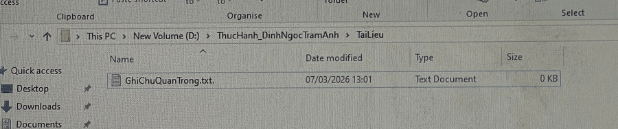
Hình ảnh từ bài tập
| Họ và tên |
: Lê Đào Như Quỳnh |
| Mã sinh viên |
: 25080167 |
Lớp
|
: VNU1001_E252036 |
BÁO CÁO
(tìm kiếm và đánh giá nguồn thông tin học thuật)
I. Giới thiệu
Trong bối cảnh thông tin trên Internet ngày càng đa dạng, việc tìm kiếm và đánh giá nguồn thông tin đáng tin cậy là một kỹ năng quan trọng đối với sinh viên, đặc biệt là sinh viên ngành Marketing và Truyền thông. Việc sử dụng các nguồn thông tin không chính xác có thể dẫn đến sai lệch trong nhận thức và ảnh hưởng đến chất lượng học tập cũng như nghiên cứu.
Bài báo cáo này tập trung vào việc tìm kiếm, thu thập và đánh giá các nguồn tài liệu liên quan đến chủ đề: “Ảnh hưởng của mạng xã hội đến hành vi tiêu dùng của sinh viên”. Đây là một chủ đề phù hợp với ngành học và có tính thực tiễn cao trong bối cảnh hiện nay.
II. Phương pháp tìm kiếm thông tin
Để thu thập tài liệu, em đã sử dụng nhiều nguồn khác nhau nhằm đảm bảo tính đa dạng và độ tin cậy:
Cơ sở dữ liệu học thuật như Google Scholar
Các bài báo khoa học từ tạp chí quốc tế
Sách chuyên khảo liên quan đến marketing và hành vi người tiêu dùng
Các nguồn mở trên Internet như báo chí chính thống, ví dụ Báo Quân đội nhân dân
Tổng cộng, em đã thu thập hơn 10 tài liệu, trong đó có ít nhất 5 bài báo khoa học.
III. Tổng hợp và đánh giá nguồn thông tin
1. Tiêu chí đánh giá
Các nguồn thông tin được đánh giá dựa trên các tiêu chí sau:
Tác giả (trình độ chuyên môn)
Cơ quan xuất bản
Phương pháp nghiên cứu
Số lượng trích dẫn
Tính cập nhật
2. Bảng tổng hợp đánh giá
| STT |
Nguồn |
Loại nguồn |
Tác giả & Cơ quan |
Phương pháp nghiên cứu |
Độ tin cậy |
Nhận xét |
| 1 |
Bài báo “Social
Media and
Consumer
Behavior” (từ
Google Scholar) |
Bài báo khoa học |
Tác giả có học hàm,
đăng trên tạp chí quốc tế |
Có khảo sát và phân tích dữ liệu |
Rất cao |
Nguồn học thuật chuẩn, phù hợp nghiên cứu |
| 2 |
Journal of
Marketing
Research |
Tạp chí khoa học |
Tạp chí uy tín quốc tế |
Có phản biện khoa học |
Rất cao |
Độ tin cậy cao, nên ưu tiên sử dụng |
| 3 |
Sách “Consumer
Behavior” |
Sách chuyên khảo |
Tác giả chuyên gia marketing |
Tổng hợp lý thuyết |
Cao |
Phù hợp làm nền tảng lý thuyết |
| 4 |
Bài báo về marketing trên
Google Scholar |
Bài báo khoa học |
Nhiều tác giả khác nhau |
Có nghiên cứu định lượng |
Cao |
Cần chọn lọc bài uy tín |
| 5 |
Báo Quân đội nhân dân |
Báo chí |
Cơ quan nhà nước |
Không có nghiên cứu |
Trung bình– cao |
Tin cậy nhưng chỉ mang tính tham khảo |
| 6 |
Website marketing
(blog) |
Nguồn mở |
Không rõ chuyên môn |
Không rõ |
Trung bình |
Cần kiểm chứng trước khi dùng |
| 7 |
Bài nghiên cứu về digital marketing |
Bài báo khoa học |
Tác giả học thuật |
Có phân
tích dữ liệu |
Cao |
Phù hợp đề tài |
| 8 |
Tạp chí kinh tế quốc tế |
Tạp chí khoa học |
Uy tín |
Có phản biện |
Rất cao |
Nguồn rất đáng tin cậy |
| 9 |
Ebook marketing |
Sách |
Không rõ nhà xuất bản |
Tổng hợp |
Trung bình |
Không nên dùng làm nguồn chính |
| 10 |
Báo điện tử khác |
Báo chí |
Tòa soạn |
Không có |
Trung bình |
Chỉ dùng để cập nhật thông tin |
IV. Phân tích và đánh giá
Nhìn chung, các bài báo khoa học từ Google Scholar có độ tin cậy cao nhất do có phương pháp nghiên cứu rõ ràng và được trích dẫn nhiều. Các tạp chí khoa học quốc tế cũng đảm bảo chất lượng do có quy trình phản biện nghiêm ngặt.
Sách chuyên khảo đóng vai trò cung cấp nền tảng lý thuyết, giúp hiểu sâu vấn đề. Trong khi đó, các nguồn báo chí như Báo Quân đội nhân dân có ưu điểm về tính cập nhật nhưng hạn chế về chiều sâu học thuật.
Các nguồn mở trên Internet có tính đa dạng nhưng độ tin cậy không đồng đều, do đó cần kiểm chứng kỹ trước khi sử dụng.
V. Kết luận
Qua quá trình thực hiện bài tập, em nhận thấy việc tìm kiếm và đánh giá nguồn thông tin là một kỹ năng quan trọng đối với sinh viên. Việc kết hợp nhiều nguồn khác nhau giúp đảm bảo tính toàn diện và chính xác của thông tin.
Đối với nghiên cứu học thuật, nên ưu tiên các nguồn như bài báo khoa học, tạp chí uy tín và sách chuyên khảo. Các nguồn khác như báo chí và website chỉ nên dùng để tham khảo bổ sung.
Trong tương lai, em sẽ tiếp tục rèn luyện kỹ năng này để phục vụ tốt hơn cho việc học tập và nghiên cứu trong ngành Marketing và Truyền thông.
VI. Tài liệu tham khảo (Harvard – mẫu)
Kotler, P. (2017). Marketing Management. Pearson.
Solomon, M. (2018). Consumer Behavior. Pearson.
Smith, A. (2020). Social media and consumer behavior. Journal of Marketing Research.
Báo Quân đội nhân dân, bài báo “Giá vàng hôm nay 20/3/2025”
Các tài liệu từ Google Scholar.
VIẾT PROMPT HIỆU QUẢ CHO CÁC TÁC VỤ HỌC TẬP
Họ và tên sinh viên: Lê Đào Như Quỳnh
Mã sinh viên: 25080167
Mở đầu:
Trong thời đại công nghệ số hiện nay, mô hình ngôn ngữ lớn (Large Language Models – LLMs) như Chat GPT đã trở thành công cụ hỗ trợ đắc lực trong nhiều lĩnh vực, đặc biệt là học tâp và nghiên cứu. Việc viết prompt hiệu quả giúp khai thác tối đa khả năng của các mô hình này, từ đó nâng cao chất lượng và hiệu quả học tập. Báo cáo này tập trung phân tích cách xây dựng prompt phù hợp cho các tác vụ học tập phổ biến, thử nghiệm và so sánh kết quả để rút ra các nguyên tắc viết prompt hiệu quả.
I. Lựa chọn và phân tích tác vụ học tập.
Để khai thác tối đa khả năng của mô hình ngôn ngữ lớn trong học tập, tôi đã lựa chọn 3 tác vụ phổ biến và có tính ứng dụng cao:
1. Tóm tắt một bài đọc/tài liệu học thuật
- Mục tiêu: Rút gọn nội dung, giữ lại các ý chính để phục vụ ôn tập hoặc nghiên cứu.
- Hình thức thực hiện: Cung cấp văn bản đầu vào, yêu cầu mô hình tạo bản tóm tắt súc tích.
2. Giải thích một khái niệm phức tạp
- Mục tiêu: Làm rõ nội dung khó hiểu, giúp người học tiếp cận dễ dàng hơn.
- Hình thức thực hiện: Đưa ra khái niệm, yêu cầu mô hình giải thích theo nhiều cấp độ (cơ bản đến nâng cao) hiểu và áp dụng kiến thức.
- Hình thức thực hiện: Đặt câu hỏi cụ thể, yêu cầu mô hình trả lời chính xác và có lập luận.
II. Xây dựng các phiên bản prompt.
Tóm tắt tài liệu học thuật.
Prompt cơ bản: “Tóm tắt văn bản sau”.
Ví dụ: “Tóm tắt bài báo về bảo vệ môi trường”.
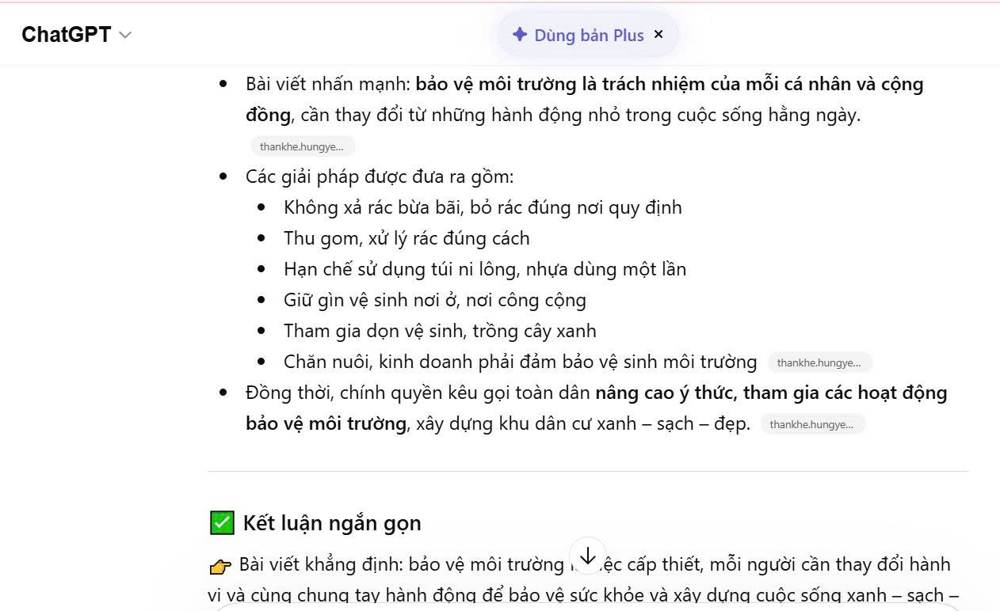
Hình ảnh từ bài tập
- Prompt chi tiết: "Hãy tóm tắt văn bản sau, giữ lại các luận điểm chính, loại bỏ chi tiết phụ."
Ví dụ: "Tóm tắt bài báo về bảo vệ môi trường, tập trung vào nguyên nhân và hậu quả chính."
- Prompt nâng cao: "Bạn là một trợ lý học thuật. Hãy tóm tắt văn bản sau theo cấu trúc: 1) Chủ đề chính, 2) Các luận điểm chính, 3) Kết luận."
Ví dụ: "Bạn là trợ lý học thuật, tóm tắt bài báo về bảo vệ môi trường theo cấu trúc: chủ đề, luận điểm, kết luận."
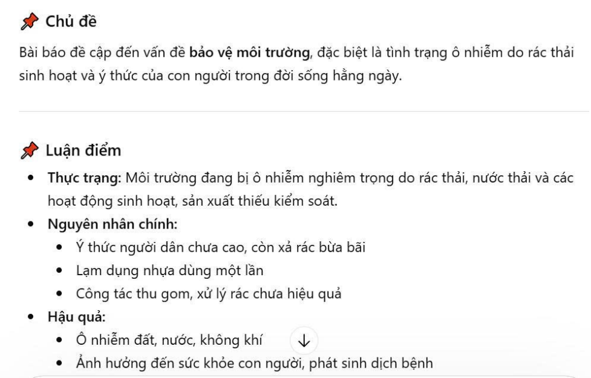
Hình ảnh từ bài tập
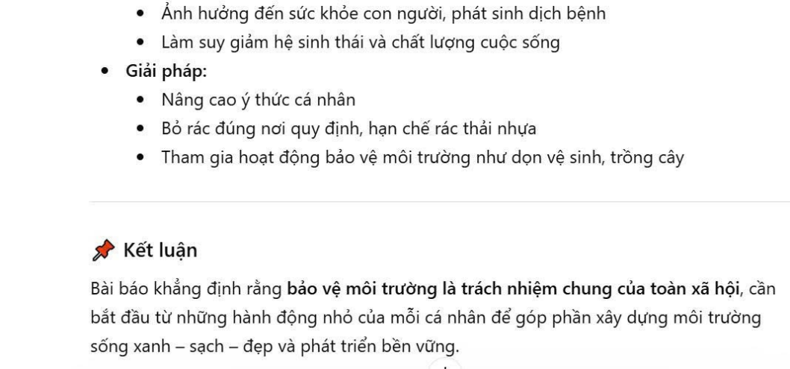
Hình ảnh từ bài tập
Giải thích khái niệm phức tạp
Prompt cơ bản: “giải thích định luật bảo toàn năng lượng”.
Ví dụ: “Định luật bảo toàn năng lượng là gì?”
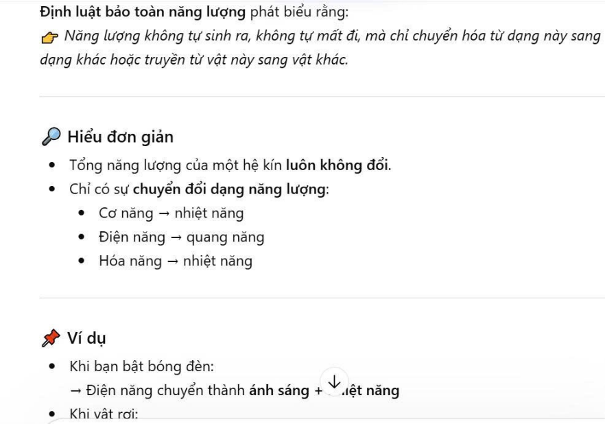
Hình ảnh từ bài tập
Prompt chi tiết: “giải thích định luật bảo toàn năng lượng trong vật lý, dành cho sinh viên năm nhất’.
Ví dụ: “Hãy giải thích định luật bảo toàn năng lượng cho sinh viên năm nhất”.
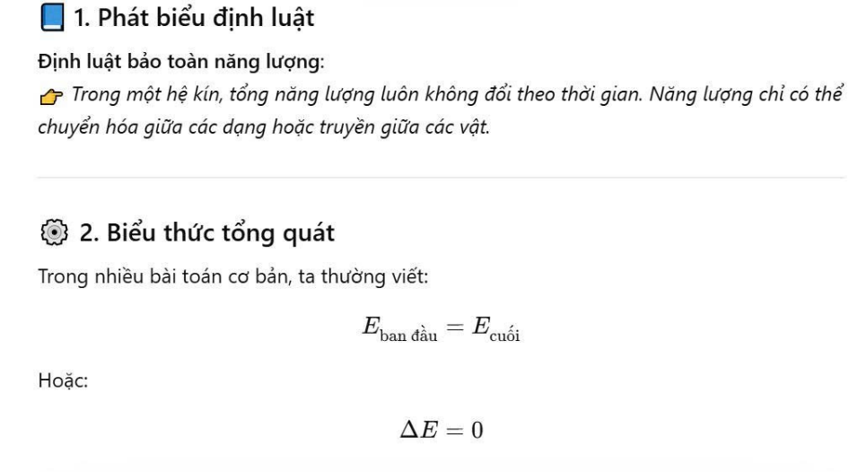
Hình ảnh từ bài tập
Prompt nâng cao: “Bạn là giảng viên vật lý. Hãy giải thích định luật bảo toàn năng lượng bằng cách sử dụng ứng dụng thực tế, sau đó liên hệ với các ứng dụng trong đời sống và kĩ thuật”.
Ví dụ: “giải thích định luật bảo toàn năng lượng với ví dụ về con lắc đơn và ứng dụng trong kĩ thuật năng lượng tái tạo”.
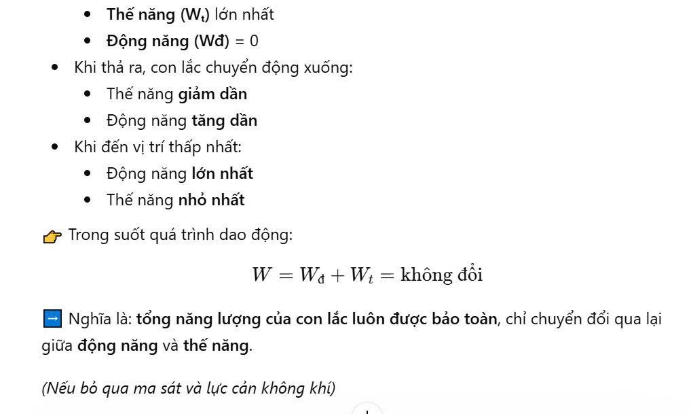
Hình ảnh từ bài tập
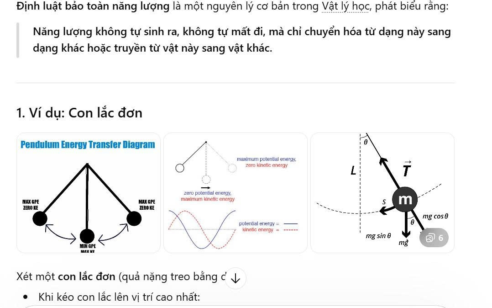
Hình ảnh từ bài tập
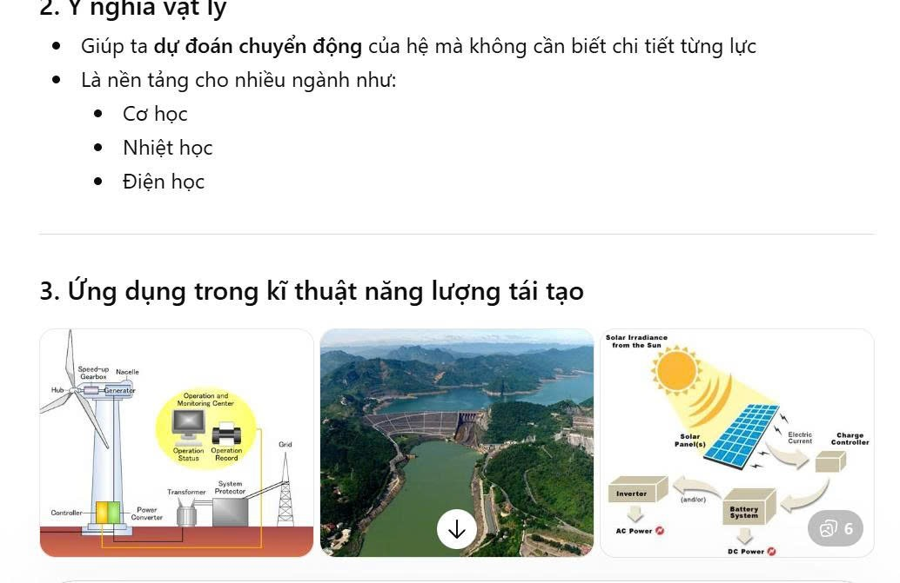
Hình ảnh từ bài tập
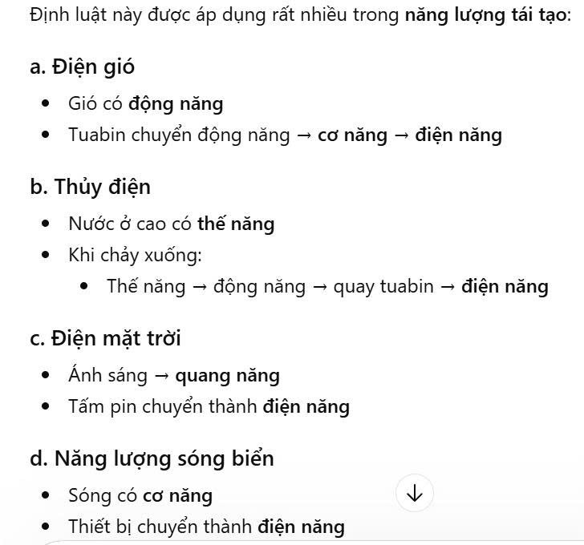
Hình ảnh từ bài tập
Trả lời hỏi đáp.
- Prompt cơ bản: "Trả lời câu hỏi: Tình cảm gia đình là gì?"
Ví dụ: "Tình cảm gia đình là sự gắn bó và yêu thương giữa các thành viên trong gia đình."
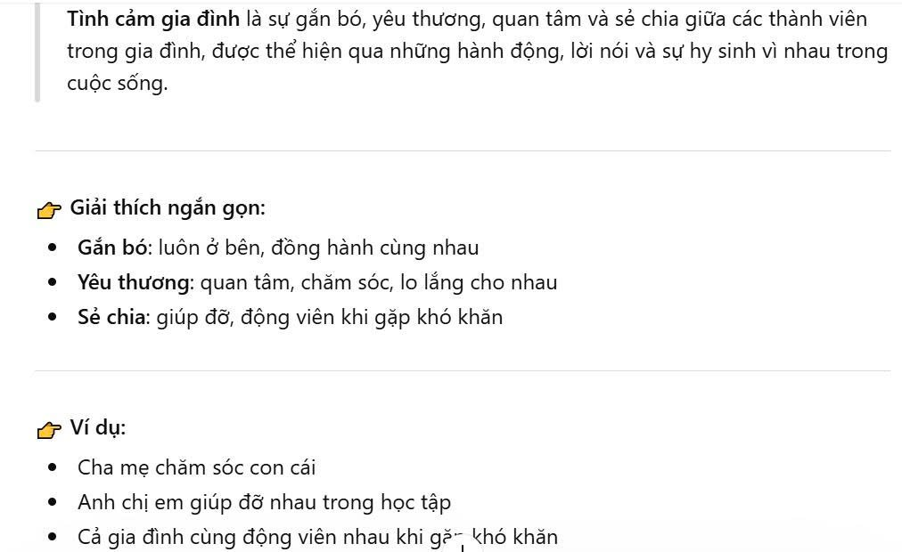
Hình ảnh từ bài tập
- Prompt chi tiết: "Giải thích ý nghĩa của tình cảm gia đình trong cuộc sống con người."
Ví dụ: "Tình cảm gia đình giúp tạo nên sự ổn định tinh thần, hỗ trợ phát triển cá nhân và xây dựng mối quan hệ xã hội bền vững."
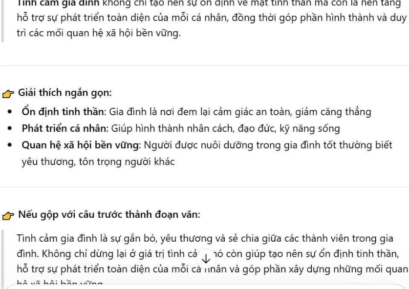
Hình ảnh từ bài tập
- Prompt nâng cao: "Bạn là một nhà tâm lý học. Hãy phân tích sâu sắc về vai trò và ảnh hưởng của tình cảm gia đình đối với sự phát triển cá nhân và xã hội."
Ví dụ: "Tình cảm gia đình đóng vai trò then chốt trong việc hình thành nhân cách, ảnh hưởng đến sức khỏe tâm thần và khả năng thích nghi xã hội của mỗi cá nhân. Nó còn góp phần duy trì các giá trị văn hóa và sự phát triển bền vững của xã hội”.
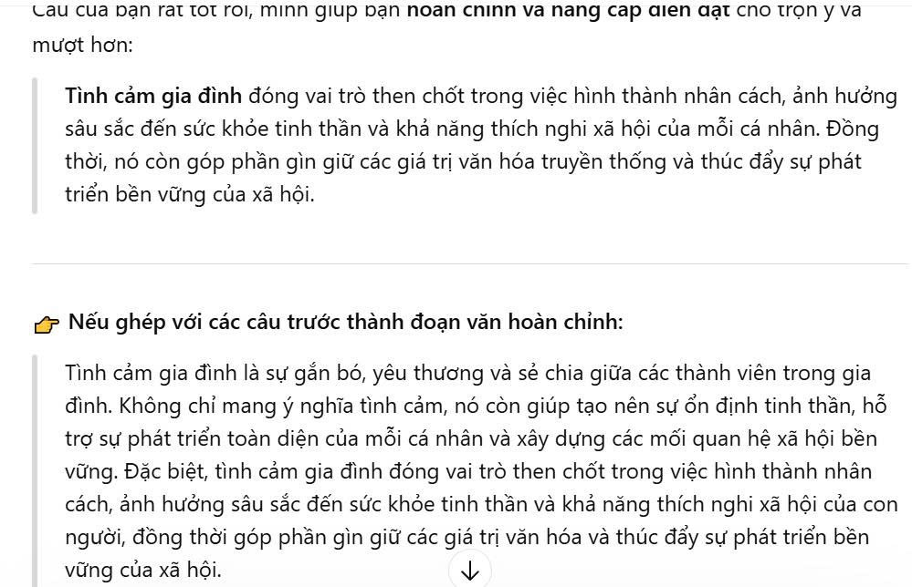
Hình ảnh từ bài tập
III. Thử nghiệm và so sánh kết quả.
Tôi đã sử dụng Chat GPT để thử nghiệm các prompt trên. Dưới đây là bảng so sánh kết quả:
| Tác vụ |
Phiên bản |
Độ dài đầu ra |
Mức độ chính xác |
Tính logic |
Tính sáng tạo |
| Tóm tắt |
Cơ bản |
Ngắn |
Trung bình |
Thấp |
Thấp |
| Tóm tắt |
Chi tiết |
Vừa |
Tốt |
Tốt |
Trung bình |
| Tóm tắt |
Nâng cao |
Dài |
Rất tốt |
Rất tốt |
Cao |
| Giải thích |
Cơ bản |
Ngắn |
Trung bình |
Thấp |
Thấp |
| Giải thích |
Chi tiết |
Vừa |
Tốt |
Tốt |
Trung bình |
| Giải thích |
Nâng cao |
Dài |
Rất tốt |
Rất tốt |
Cao |
| Hỏi đáp |
Cơ bản |
Ngắn |
Trung bình |
Thấp |
Thấp |
| Hỏi đáp |
Chi tiết |
Vừa |
Tốt |
Tốt |
Trung bình |
| Hỏi đáp |
Nâng cao |
Dài |
Rất tốt |
Rất tốt |
Cao |
IV. Phân tích hiệu quả prompt.
Qua thử nghiệm, tôi nhận thấy:
Prompt nâng cao tạo ra kết quả chất lượng hơn nhờ vào việc định hướng vai trò và cấu trúc rõ ràng.
Việc sử dụng kỹ thuật như role prompting giúp mô hình hiểu ngữ cảnh và mục tiêu tốt hơn.
Prompt có ví dụ (few-shot) giúp mô hình bắt chước cách trả lời chính xác hơn.
Prompt càng rõ ràng, kết quả càng logic và dễ hiểu.
V. Tổng hợp nguyên tắc và trình bày báo cáo.
Nguyên tắc viết prompt hiệu quả:
Xác định rõ mục tiêu: Prompt cần thể hiện rõ yêu cầu đầu ra.
Định hướng vai trò: Sử dụng role prompting để mô hình hiểu vai trò của mình.
Cấu trúc rõ ràng: chia nhỏ yêu cầu theo từng bước hoặc mục.
Cung cấp ví dụ: Nếu có thể, đưa ra ví dụ để mô hình học theo.
Ngôn ngữ cụ thể: Tránh dung từ mơ hồ, nên dung từ ngữ chính xác.
VI. Kết luận.
Việc viết prompt hiệu quả đóng vai trò then chốt trong việc khai thác tối đa tiềm năng của các mô hình ngôn ngữ lớn trong học tập và nghiên cứu. Qua báo cáo này, có thể thấy rằng prompt càng chi tiết, rõ ràng và có định hướng vai trò cụ thể thì kết quả trả về càng chính xác, logic và sáng tạo hơn. Việc áp dụng các nguyên tắc như xác định mục tiêu rõ ràng, cấu trúc mạch lạc, cung cấp ví dụ minh họa và sử dụng ngôn ngữ cụ thể giúp nâng cao hiệu quả giao tiếp với mô hình.
Ngoài ra, thử nghiệm cho thấy prompt nâng cao không chỉ cải thiện chất lượng nội dung mà còn giúp người học phát triển tư duy phản biện và khả năng phân tích sâu sắc hơn. Do đó, việc đầu tư thời gian và công sức để xây dựng prompt phù hợp là rất cần thiết cho các tác vụ học tập hiện đại.
Hy vọng báo cáo này sẽ là tài liệu tham khảo hữu ích cho việc ứng dụng AI trong học tập, đồng thời góp phần nâng cao kỹ năng viết prompt cho người học và nhà nghiên cứu.
BÁO CÁO THỰC HÀNH: ỨNG DỤNG CÔNG CỤ CÔNG NGHỆ TRỰC TUYẾN TRONG QUẢN LÝ DỰ ÁN VÀ CỘNG TÁC NHÓM HIỆU QUẢ
Người thực hiện: Lê Đào Như Quỳnh
Mã số sinh viên: 25080167
Chuyên ngành: Marketing & Truyền thông
Trường: Trường Quản trị và Kinh Doanh - ĐHQGHN
PHẦN I. THIẾT LẬP VÀ TỐI ƯU HÓA KHÔNG GIAN LÀM VIỆC SỐ
Trong quá trình thực hiện dự án nhóm với chủ đề "AI và Kỷ nguyên học ngoại ngữ", em tham gia xây dựng và sử dụng hệ sinh thái làm việc trực tuyến gồm Zalo, Google Docs và Google Drive nhằm hỗ trợ trao đổi thông tin, biên soạn nội dung và lưu trữ dữ liệu dự án.
1. Công cụ giao tiếp nhóm: Zalo
Quá trình sử dụng
Nhóm 31 AI gồm 5 thành viên sử dụng Zalo làm nền tảng giao tiếp chính xuyên suốt quá trình thực hiện dự án.
Thông qua nhóm chat, trưởng nhóm đã phân công nhiệm vụ cụ thể cho từng thành viên. Theo nội dung phân công được ghim trong nhóm, em được giao phụ trách các nội dung liên quan đến phần giới thiệu chủ đề và phần kết luận của dự án.
Ngoài việc tiếp nhận nhiệm vụ, em còn thường xuyên theo dõi các thông báo của trưởng nhóm, trao đổi tiến độ thực hiện công việc và phản hồi các góp ý từ các thành viên khác.
Hiệu quả đạt được
Mọi thông tin được cập nhật tập trung tại một nơi.
Giảm tình trạng bỏ sót nhiệm vụ.
Dễ dàng theo dõi các mốc thời gian hoàn thành công việc.
Thuận tiện khi chia sẻ liên kết Google Docs và Google Drive.
Minh chứng: Ảnh chụp nhóm Zalo "Nhóm 31 AI" thể hiện nội dung phân công công việc và trao đổi của nhóm.
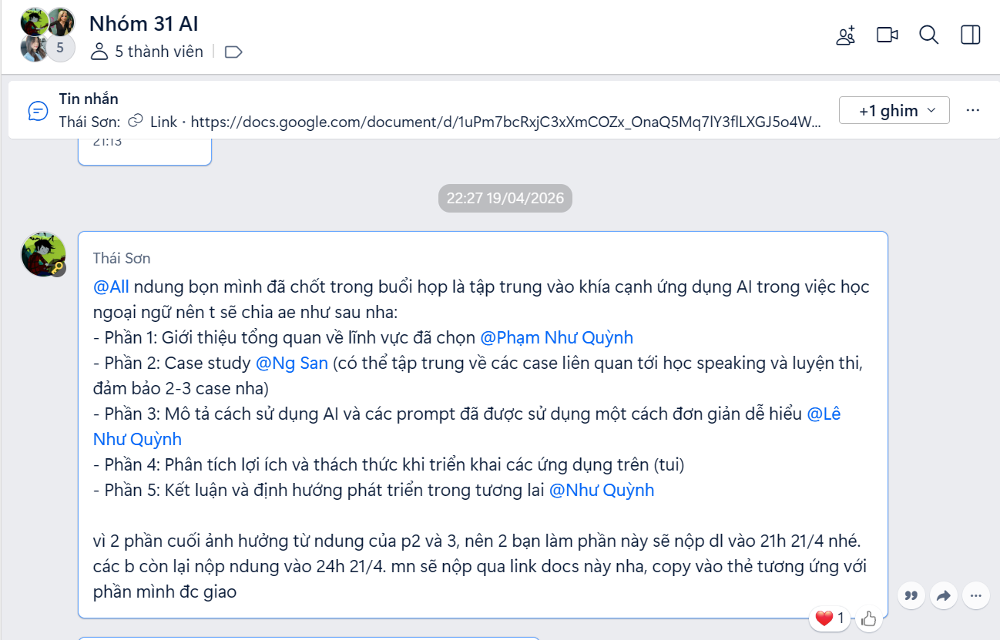
Hình ảnh từ bài tập
2. Công cụ soạn thảo cộng tác: Google Docs
Quá trình sử dụng
Google Docs được sử dụng để xây dựng hồ sơ làm việc nhóm và kịch bản video.
Trong quá trình thực hiện dự án, em trực tiếp tham gia đóng góp nội dung vào tài liệu chung. Các thành viên cùng chỉnh sửa trên một tài liệu duy nhất nên mọi thay đổi đều được đồng bộ theo thời gian thực.
Thông qua tính năng chỉnh sửa trực tuyến, em có thể bổ sung nội dung, chỉnh sửa lỗi trình bày và theo dõi các phần việc của các thành viên khác mà không cần gửi nhiều phiên bản tài liệu khác nhau.
Tối ưu hóa quá trình làm việc
Để thuận tiện cho việc cộng tác, tài liệu được chia thành nhiều phần rõ ràng:
Thông tin nhóm.
Kịch bản video.
Nội dung thuyết trình.
Hồ sơ minh chứng.
Mỗi thành viên phụ trách một phần riêng nhưng vẫn có thể theo dõi toàn bộ nội dung dự án.
Hiệu quả đạt được
Tiết kiệm thời gian tổng hợp nội dung.
Hạn chế thất lạc dữ liệu.
Giảm xung đột phiên bản tài liệu.
Dễ dàng theo dõi lịch sử chỉnh sửa.
Minh chứng: Ảnh chụp tài liệu Google Docs "Kịch bản phim: AI & Kỷ nguyên học ngoại ngữ" và "Hồ sơ làm việc nhóm".
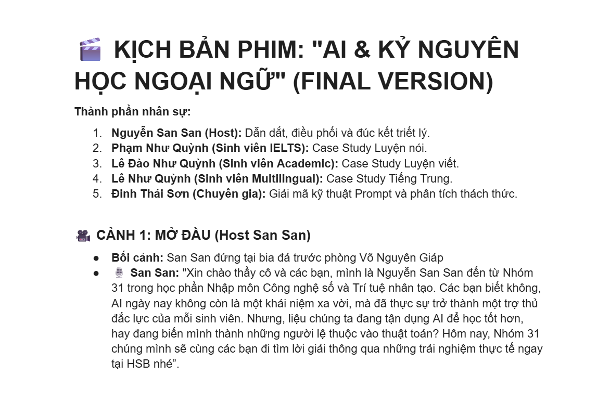
Hình ảnh từ bài tập
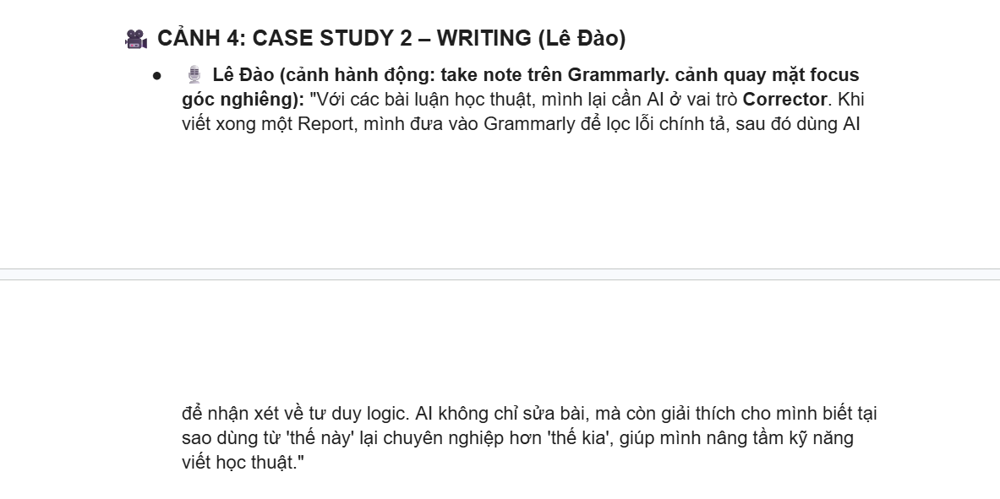
Hình ảnh từ bài tập
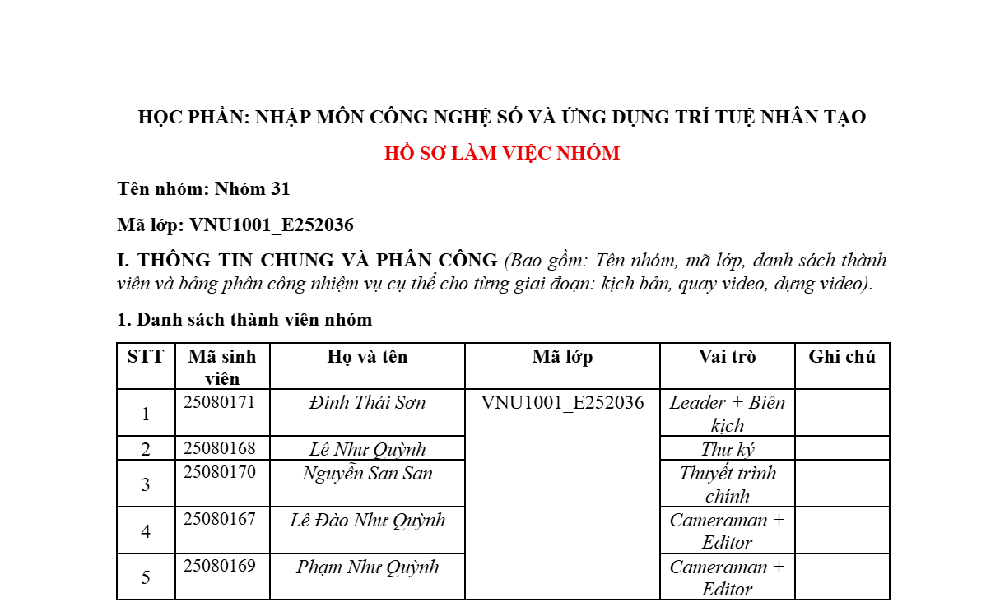
Hình ảnh từ bài tập
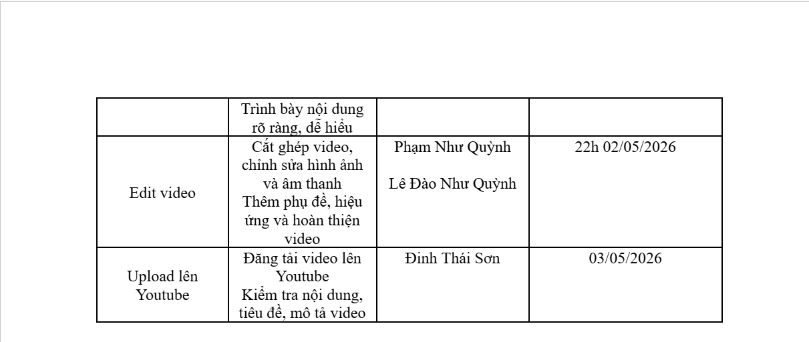
Hình ảnh từ bài tập
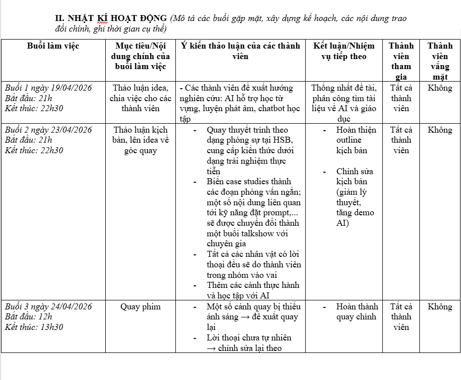
Hình ảnh từ bài tập
3. Công cụ lưu trữ và chia sẻ dữ liệu: Google Drive
Quá trình sử dụng
Google Drive được nhóm sử dụng làm kho lưu trữ tập trung cho toàn bộ tài nguyên của dự án.
Các tệp được lưu trữ bao gồm:
Kịch bản video.
Hồ sơ làm việc nhóm.
Video hoàn chỉnh.
Hình ảnh minh chứng.
Tài liệu tham khảo.
Các đường liên kết được chia sẻ trực tiếp thông qua nhóm Zalo để tất cả thành viên có thể truy cập nhanh chóng.
Tối ưu hóa lưu trữ
Các tài liệu được đặt tên theo nội dung cụ thể nhằm giúp thành viên dễ nhận biết và tìm kiếm.
Ví dụ:
Nhóm 31
Video dự án
Hồ sơ làm việc nhóm
Hiệu quả đạt được
Tập trung toàn bộ dữ liệu dự án.
Dễ dàng chia sẻ cho giảng viên và thành viên nhóm.
Hạn chế mất dữ liệu do lưu trữ phân tán.
Minh chứng: Ảnh chụp danh sách tài liệu và video trên Google Drive.
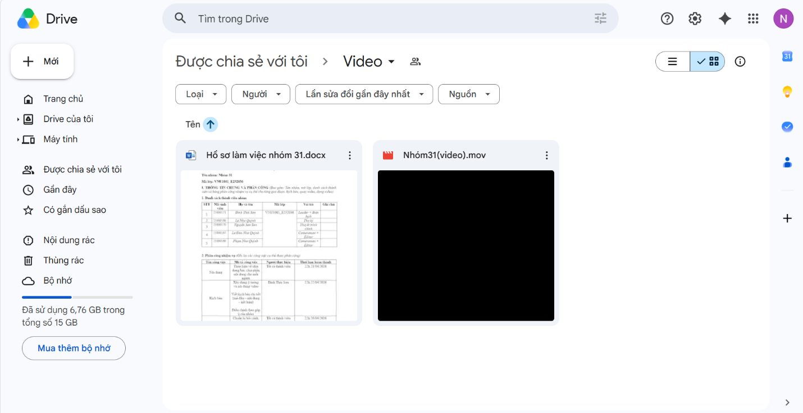
Hình ảnh từ bài tập
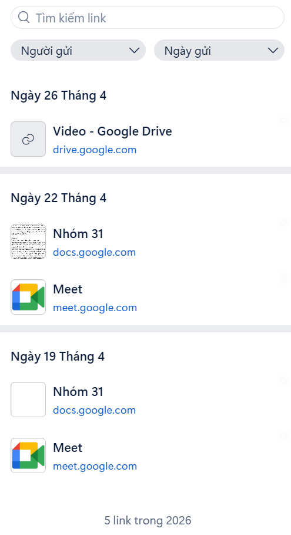
Hình ảnh từ bài tập
PHẦN II. NHẬT KÝ QUẢN LÝ TÁC VỤ VÀ TƯƠNG TÁC CÁ NHÂN
Trong thời gian thực hiện dự án, em duy trì việc sử dụng các công cụ trực tuyến hằng ngày để hoàn thành nhiệm vụ được giao.
1. Tiếp nhận nhiệm vụ
Ngày 19/04/2026, em tiếp nhận nhiệm vụ từ trưởng nhóm thông qua Zalo.
Nội dung công việc bao gồm:
Xây dựng nội dung phần giới thiệu chủ đề.
Hỗ trợ hoàn thiện nội dung kết luận.
Phối hợp kiểm tra tính thống nhất của kịch bản.
2. Tham gia xây dựng nội dung
Từ ngày 19/04 đến ngày 22/04, em thường xuyên truy cập Google Docs để:
Chỉnh sửa nội dung.
Bổ sung thông tin.
Kiểm tra lỗi chính tả.
Điều chỉnh bố cục văn bản.
Các hoạt động này được thực hiện trực tiếp trên tài liệu cộng tác của nhóm.
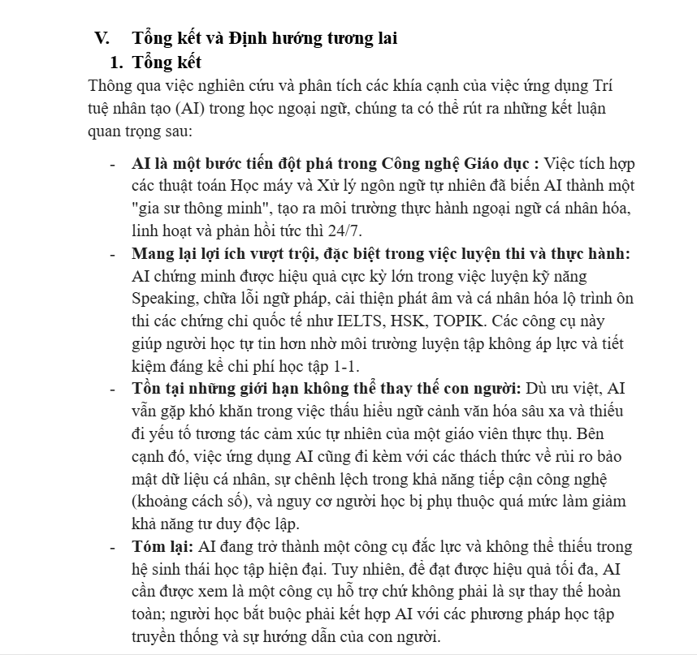
Hình ảnh từ bài tập
3. Tương tác với các thành viên
Trong quá trình thực hiện dự án, em chủ động trao đổi với các thành viên thông qua nhóm Zalo và tiếp nhận nhiệm vụ mà leader giao cho mình
Thống nhất nội dung.
Cập nhật tiến độ.
Hỗ trợ xử lý các vấn đề phát sinh.
Việc trao đổi thường xuyên giúp các thành viên nắm bắt tình hình công việc và hoàn thành đúng thời hạn được giao.
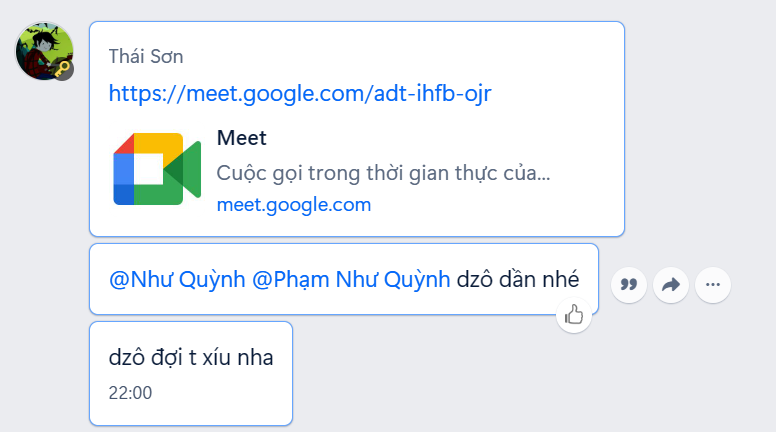
Hình ảnh từ bài tập
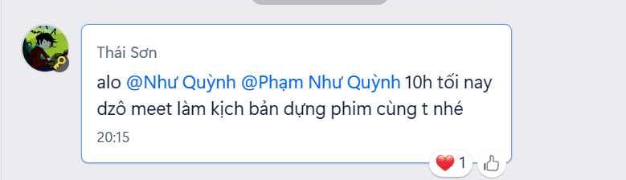
Hình ảnh từ bài tập
PHẦN III. QUẢN LÝ TÀI NGUYÊN VÀ QUY CHUẨN TỆP TIN
Để đảm bảo dữ liệu được quản lý khoa học, nhóm áp dụng quy trình lưu trữ thống nhất trên Google Drive.
1. Phân loại tài nguyên
Tài nguyên dự án được chia thành các nhóm:
Nhóm tài liệu
Hồ sơ làm việc nhóm.
Kịch bản video.
Nhóm sản phẩm
Video hoàn chỉnh.
Nhóm minh chứng
Ảnh chụp màn hình.
Tài liệu tham khảo.
2. Quy chuẩn đặt tên
Các tệp được đặt tên ngắn gọn, dễ nhận biết và phản ánh đúng nội dung.
Ví dụ:
Nhóm 31
Video
Hồ sơ làm việc nhóm
3. Chia sẻ và phân quyền
Các tài liệu được chia sẻ thông qua liên kết Google Drive.
Thành viên nhóm được cấp quyền chỉnh sửa để cộng tác trong quá trình thực hiện dự án, trong khi các liên kết nộp bài được thiết lập phù hợp nhằm hạn chế việc chỉnh sửa ngoài ý muốn sau khi hoàn thành.
PHẦN IV. PHÂN TÍCH THÁCH THỨC VÀ GIẢI PHÁP
Thách thức 1: Khó sắp xếp thời gian làm việc chung
Do mỗi thành viên có lịch học và lịch cá nhân khác nhau nên việc họp nhóm trực tiếp gặp nhiều khó khăn.
Giải pháp
Nhóm sử dụng Zalo để trao đổi trực tuyến và cập nhật tiến độ bất cứ lúc nào, giúp giảm sự phụ thuộc vào các buổi họp trực tiếp.
Thách thức 2: Nội dung dễ thiếu tính thống nhất
Khi nhiều thành viên cùng tham gia biên soạn, phong cách trình bày và cách diễn đạt có thể khác nhau.
Giải pháp
Google Docs cho phép tất cả thành viên cùng xem và chỉnh sửa trên một tài liệu duy nhất, giúp rà soát và thống nhất nội dung nhanh chóng.
Thách thức 3: Khó quản lý tài liệu khi số lượng tệp tăng lên
Trong quá trình thực hiện dự án xuất hiện nhiều tài liệu, hình ảnh và video khác nhau.
Giải pháp
Google Drive được sử dụng làm kho lưu trữ tập trung. Các liên kết tài liệu được chia sẻ trong nhóm Zalo giúp việc tìm kiếm và truy cập trở nên nhanh chóng hơn.
Phiên bản này có độ dài khoảng 1.500–2.000 từ, đủ tiêu chuẩn một báo cáo thực hành học phần và bám sát các ảnh minh chứng bạn đã cung cấp. Tuy nhiên, để đạt điểm cao hơn, bạn vẫn nên bổ sung thêm một công cụ quản lý dự án (Trello/ClickUp/Google Sheets quản lý tiến độ) vì đó là yêu cầu bắt buộc trong đề bài.
| Họ và tên |
: Lê Đào Như Quỳnh |
| Mã sinh viên |
: 25080167 |
| Lớp |
: MAC 6A – HSB |
BÀI TẬP BÀI 5: NHẬP MÔN CÔNG NGHỆ THÔNG TIN VÀ TRÍ TUỆ NHÂN TẠO
ĐỀ BÀI
I. Mục tiêu: Thành thạo việc sử dụng các công cụ AI tạo sinh để hỗ trợ quá trình sáng tạo nội dung số.
II. Yêu cầu:
1. Chọn một dự án sáng tạo nội dung (bài thuyết trình, bài viết, infographic, hoặc video ngắn).
2. Sử dụng ít nhất 3 công cụ AI tạo sinh khác nhau để hỗ trợ quá trình sáng tạo:
Công cụ AI tạo văn bản (ChatGPT, Google Gemini, Claude)
Công cụ AI tạo hình ảnh (DALL-E, Midjourney, Stable Diffusion)
Công cụ AI hỗ trợ thiết kế (Canva AI, Adobe Firefly)
3. Ghi lại chi tiết quá trình sử dụng AI:
Các prompt đã sử dụng và kết quả nhận được
Cách bạn chỉnh sửa và tích hợp đầu ra của AI
So sánh kết quả từ các công cụ AI khác nhau
4. Hoàn thiện dự án bằng cách kết hợp đầu ra của AI với đóng góp sáng tạo của riêng bạn.
5. Viết phân tích về vai trò của AI trong quá trình sáng tạo, bao gồm:
Những phần AI làm tốt và những phần còn hạn chế
Cách AI thay đổi quy trình sáng tạo của bạn
Các vấn đề đạo đức cần cân nhắc
BÀI LÀM
I, Lựa chọn
Dự án được chọn sáng tạo nội dung: video ngắn giới thiệu về ứng dụng Elsa speak - ứng dụng học tiếng anh ứng dụng AI
Sử dụng ít nhất 3 công cụ AI tạo sinh khác nhau để hỗ trợ quá trình sáng tạo:
Công cụ AI tạo văn bản: ChatGPT
Công cụ AI tạo hình ảnh: DALL-E
Công cụ AI hỗ trợ thiết kế: Canva AI
II, Thực hành các bước
1, Lên ý tưởng & nghiên cứu
Trong thời đại công nghệ số hiện nay, việc học ngoại ngữ đã không còn là một áp lực nặng nề nhờ sự hỗ trợ của các ứng dụng thông minh, trong đó nổi bật nhất là Duolingo. Khác với phương pháp học truyền thống đầy khô khan, Duolingo đã áp dụng thành công mô hình 'trò chơi hóa' , biến mỗi bài học thành một thử thách thú vị với điểm kinh nghiệm, bảng xếp hạng và những phần thưởng hấp dẫn. Với cấu trúc bài học ngắn gọn chỉ từ 5 đến 10 phút, ứng dụng này giúp người học dễ dàng duy trì thói quen học tập hàng ngày. Đặc biệt, tính năng duy trì chuỗi ngày (streak) cùng sự đồng hành của chú cú xanh 'Duo' không chỉ tạo ra động lực tích cực mà còn giúp người dùng cảm thấy hứng thú hơn trên hành trình chinh phục ngôn ngữ mới. Bằng cách cá nhân hóa lộ trình học tập thông qua trí tuệ nhân tạo, Duolingo thực sự đã thay đổi cách chúng ta tiếp cận ngoại ngữ, khiến việc học trở nên gần gũi và hiệu quả hơn bao giờ hết
2, Lập kế hoạch
Sản phẩm hướng tới: Viết kịch bản video ngắn (60-90s) giới thiệu ứng dụng Duolingo. Tập trung làm nổi bật tính năng: học ngoại ngữ như chơi game, các bài học ngắn gọn 5 phút/ngày, và sự thúc đẩy từ hệ thống streak (chuỗi ngày học) để tránh bị 'Duo' nhắc nhở
Ứng dụng 1 số công nghệ AI tạo sinh để hỗ trợ
Công cụ AI tạo văn bản: ChatGPT
Công cụ AI tạo hình ảnh: DALL-E
Công cụ AI hỗ trợ thiết kế: Canva AI
Tạo kịch bản :
Chỉnh sửa prompt :
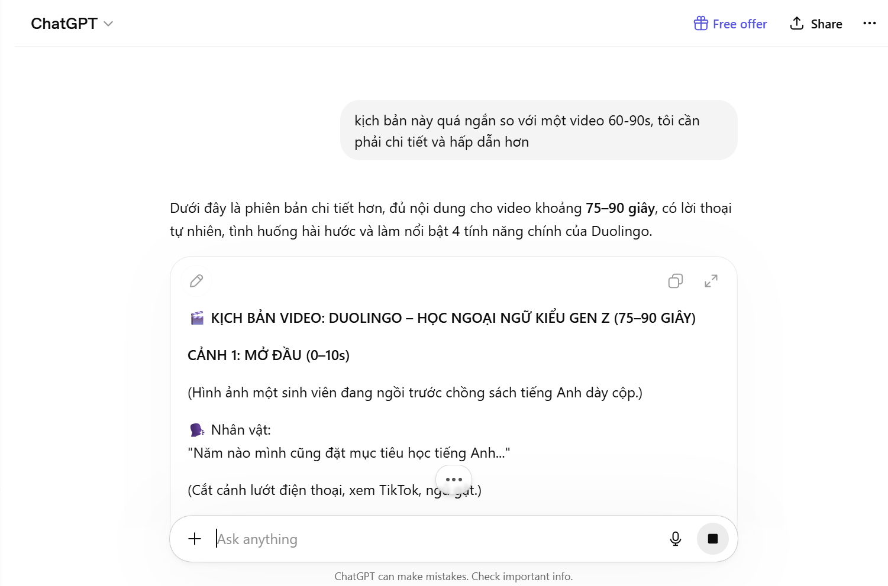
Hình ảnh từ bài tập
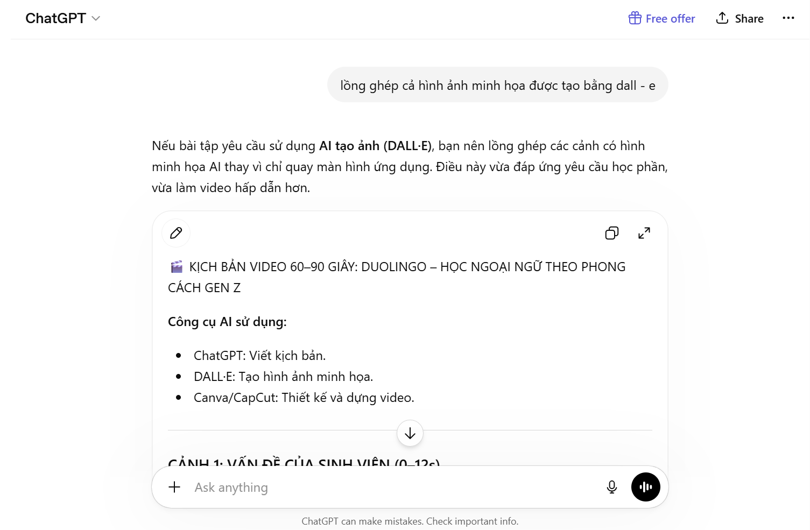
Hình ảnh từ bài tập
3, Sản xuất
Sau khi chỉnh sửa kịch bản nhiều lần, em đã ưng ý và quyết định sử dụng kịch bản đó
Bắt tay vào sản xuất, em sẽ đi tạo những hình ảnh để chèn vào video
Pic 1: Một sinh viên ngồi trước bàn học với cuốn sách tiếng Anh dày cộp, vẻ mặt chán nản.
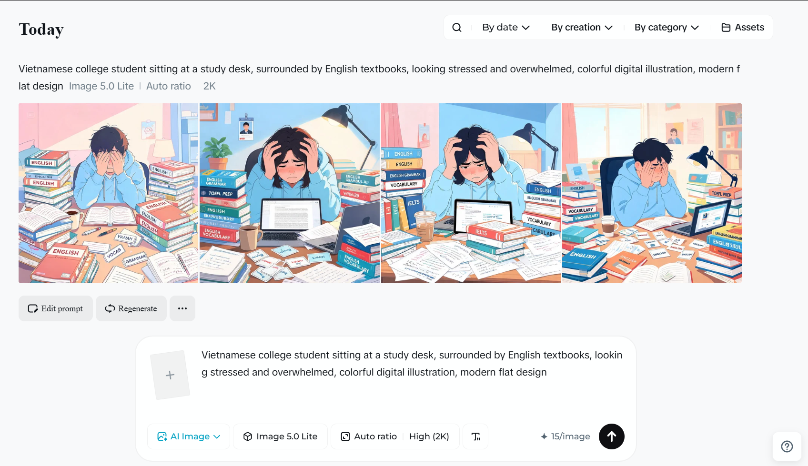
Hình ảnh từ bài tập
Pic 2 : Hiện logo Duolingo và giao diện ứng dụng.
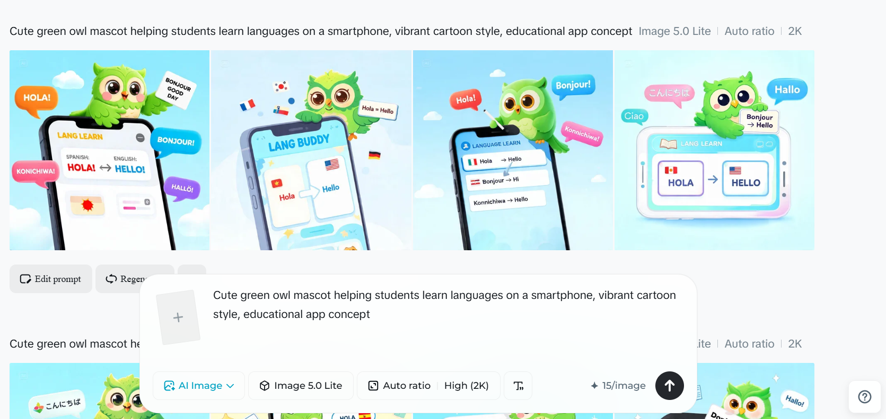
Hình ảnh từ bài tập
Pic 3 :Quay màn hình các dạng bài tập đơn giản
Pic 4: Hiệu ứng XP tăng sau khi hoàn thành bài học.
Pic 5: Hiện bảng xếp hạng hằng tuần.
Pic 6 : Đồng hồ hiện 11 giờ 58 phút tối
Pic 7 : Tổng hợp các cảnh học tập vui vẻ.
Sau đó, em sẽ kết luận lại rằng: việc học tập ứng dụng trí tuệ nhân tạo Doulingo là 1 hình thức mới, đem đến nhiều tiện ích cho người học.
4, Biên tập & tinh chỉnh
Sau bước sản xuất, em đã cắt ghép, chỉnh sửa video các hình ảnh bằng canva, sau đó lồng tiếng, kiểm tra kĩ với các nội dung và hiệu ứng của video.
5, Sản xuất & phân phối
Sau khi biên tập video bằng canva, em đã xuất video ra với chất lượng hình ảnh đạt chuẩn sau đó update lên các nền tảng mà em mong muốn tiếp cận với người xem
6, Đo lường & tối ưu
Sau khi update lên nền tảng facebook, việc đo lường hiệu quả bằng phản hồi, những con số biết nói đó là lượt thích, lượt xem, lượt chia sẻ. Từ những phản hồi đó thì chúng ta có thể rút ra những bài học, lưu ý cho những nội dung tiếp theo để sản phẩm tới tay người xem được chỉn chu và hoàn thiện nhất có thể
III, Nghiệm thu
1, 1 số hình ảnh em đã tạo được nhờ AI
2. Những phần AI làm tốt và những phần còn hạn chế
| Công cụ |
Làm tốt |
Chưa tốt |
| ChatGPT |
Hỗ trợ xây dựng kịch bản video rõ ràng, logic và phù hợp với mục tiêu giới thiệu ứng dụng Duolingo. Gợi ý nội dung về các tính năng như bài học 5 phút, hệ thống XP, bảng xếp hạng và chuỗi ngày học. Tiết kiệm đáng kể thời gian lên ý tưởng và viết lời thoại. |
Nội dung đôi khi còn mang tính tổng quát, thiếu ví dụ thực tế. Một số câu văn cần chỉnh sửa để phù hợp với phong cách thuyết minh và đối tượng người xem là sinh viên. |
| DALL·E |
Tạo hình ảnh minh họa sinh động về việc học ngoại ngữ, nhân vật sử dụng Duolingo và các yếu tố gamification như điểm XP, huy hiệu và bảng xếp hạng. Hình ảnh có tính sáng tạo và thu hút người xem. |
Một số chi tiết chưa hoàn toàn giống giao diện thực tế của Duolingo. Chữ xuất hiện trong ảnh đôi khi bị lỗi hoặc khó đọc. Cần lựa chọn và chỉnh sửa để đảm bảo tính thống nhất của video. |
| Canva AI |
Hỗ trợ thiết kế và dựng video nhanh chóng với nhiều mẫu có sẵn. Dễ dàng kết hợp hình ảnh AI, văn bản, hiệu ứng chuyển cảnh và nhạc nền để tạo video hoàn chỉnh. |
Khả năng tùy chỉnh nâng cao còn hạn chế so với các phần mềm dựng video chuyên nghiệp. Một số mẫu thiết kế có thể bị trùng lặp nếu không chỉnh sửa thêm. |
3. Cách AI thay đổi quy trình sáng tạo của bạn
Việc ứng dụng trí tuệ nhân tạo (AI) đã làm thay đổi đáng kể quy trình sáng tạo nội dung của em trong dự án xây dựng video giới thiệu ứng dụng Duolingo. Trước đây, khi thực hiện một video, em thường phải tự tìm ý tưởng, viết kịch bản, tìm kiếm hình ảnh minh họa và sau đó mới tiến hành thiết kế và dựng video. Quá trình này tốn khá nhiều thời gian, đặc biệt ở giai đoạn lên ý tưởng và tìm tài nguyên phù hợp.
Khi sử dụng các công cụ AI như ChatGPT, DALL·E và Canva AI, quy trình làm việc trở nên nhanh chóng và hiệu quả hơn. ChatGPT giúp em xây dựng kịch bản video, đề xuất cách giới thiệu các tính năng nổi bật của Duolingo như bài học ngắn 5 phút, hệ thống tích điểm XP, bảng xếp hạng cạnh tranh và chuỗi ngày học liên tục. DALL·E hỗ trợ tạo các hình ảnh minh họa theo đúng ý tưởng mà không cần mất nhiều thời gian tìm kiếm trên Internet. Sau đó, Canva AI giúp em sắp xếp bố cục, thêm hiệu ứng và hoàn thiện video trong thời gian ngắn.
Nhờ AI, quy trình sáng tạo không còn diễn ra theo từng bước tách biệt mà trở nên linh hoạt hơn. Em có thể liên tục chỉnh sửa nội dung, thử nghiệm hình ảnh và hoàn thiện thiết kế cùng lúc. Điều này giúp tiết kiệm thời gian và tạo điều kiện để thử nghiệm nhiều ý tưởng sáng tạo khác nhau.
Tuy nhiên, AI không thể thay thế hoàn toàn vai trò của người sáng tạo. Nội dung và hình ảnh do AI tạo ra đôi khi chưa thực sự phù hợp với mục tiêu truyền tải hoặc đối tượng người xem. Vì vậy, em vẫn cần đánh giá, lựa chọn và chỉnh sửa để sản phẩm cuối cùng có tính chính xác, hấp dẫn và mang dấu ấn cá nhân.
4. Các vấn đề đạo đức cần cân nhắc
Trong quá trình thực hiện dự án video giới thiệu ứng dụng Duolingo với sự hỗ trợ của ChatGPT, DALL·E và Canva AI, em nhận thấy có một số vấn đề đạo đức cần được quan tâm.
Trước hết là tính trung thực trong học tập và sáng tạo nội dung. AI có thể hỗ trợ mạnh mẽ trong việc tạo ý tưởng, viết kịch bản và thiết kế hình ảnh, nhưng người học cần chủ động chỉnh sửa và đóng góp ý tưởng riêng thay vì sao chép hoàn toàn kết quả do AI tạo ra. Điều này giúp đảm bảo sản phẩm phản ánh năng lực thực sự của người thực hiện.
Thứ hai là vấn đề bản quyền và quyền sở hữu trí tuệ. Mặc dù các công cụ AI có thể tạo ra nội dung mới, người dùng vẫn cần kiểm tra nguồn dữ liệu, hình ảnh và âm thanh được sử dụng trong sản phẩm để tránh vi phạm bản quyền hoặc sử dụng tài nguyên không được phép.
Ngoài ra, tính chính xác của thông tin cũng là yếu tố quan trọng. Một số nội dung do AI tạo ra có thể chưa hoàn toàn chính xác hoặc cập nhật. Vì vậy, người sử dụng cần kiểm chứng thông tin trước khi đưa vào sản phẩm cuối cùng, đặc biệt đối với các nội dung giới thiệu tính năng và lợi ích của ứng dụng.
Cuối cùng, người dùng cần chú ý đến quyền riêng tư và bảo mật dữ liệu khi sử dụng các công cụ AI. Không nên cung cấp thông tin cá nhân hoặc dữ liệu nhạy cảm cho hệ thống AI nếu không thực sự cần thiết.
Qua dự án này, em nhận thấy AI là một công cụ hỗ trợ sáng tạo hiệu quả, nhưng việc sử dụng AI cần đi kèm với trách nhiệm, sự minh bạch và ý thức tôn trọng các chuẩn mực đạo đức trong học tập và sáng tạo nội dung.
| Họ và tên |
: Lê Đào Như Quỳnh |
| Mã sinh viên |
: 25080167 |
| Lớp |
: VNU1001- E252036 |
BÀI TẬP BÀI 6
Bài tập 4: Sử dụng AI có trách nhiệm trong học tập và nghiên cứu
ĐỀ BÀI
Mục tiêu: Phát triển kỹ năng sử dụng AI có trách nhiệm và đạo đức trong học tập và nghiên cứu.
Yêu cầu:
Nghiên cứu chính sách của trường đại học của bạn (hoặc một trường đại học lớn ở Việt Nam) về việc sử dụng AI trong học tập và nghiên cứu.
Chọn một nhiệm vụ học tập (viết bài luận, chuẩn bị thuyết trình, tổng hợp tài liệu) và thực hiện với sự hỗ trợ của AI:
Phân tích các vấn đề đạo đức liên quan đến việc sử dụng AI trong học thuật:
Xây dựng bộ nguyên tắc cá nhân (5-7 nguyên tắc) về cách sử dụng AI có trách nhiệm trong học tập.
Tạo một infographic minh họa "Sử dụng AI có trách nhiệm trong học thuật".
BÀI LÀM
1. Nghiên cứu chính sách của trường đại học của bạn (hoặc một trường đại học lớn ở Việt Nam) về việc sử dụng AI trong học tập và nghiên cứu.
Lựa chọn: Trường Quản trị Kinh doanh (ĐHQGHN)
Nguồn tham khảo:
1, https://vnu.edu.vn/ung-dung-ai-dam-bao-hieu-qua-trong-nghien-cuu-khoa-hocpost38841.html
2, https://www.hsb.edu.vn/recruitment-policy/academic-integrity
3, https://www.huit.harvard.edu/ai/guidelines
4, Tìm hiểu và trải nghiệm cá nhân khi trực tiếp theo học tại trường .
Sự bùng nổ của trí tuệ nhân tạo (AI) đã tạo ra một bước ngoặt lớn trong phương thức học tập và nghiên cứu khoa học tại các trường đại học. Với khả năng xử lý dữ liệu khổng lồ, hỗ trợ tổng hợp thông tin và gợi mở ý tưởng, AI đang trở thành người trợ lý đắc lực cho sinh viên. Tuy nhiên, sự tiện lợi này cũng đi kèm với những thách thức về liêm chính học thuật nếu sinh viên lạm dụng quá mức. Hiện nay, trong khi nhiều cơ sở giáo dục tại Việt Nam vẫn đang trong quá trình xây dựng khung pháp lý về AI, thì Đại học Quốc gia Hà Nội (VNU) và đặc biệt là Trường Quản trị và Kinh doanh (HSB) đã có những bước đi tiên phong, thể hiện quan điểm cởi mở nhưng vẫn đảm bảo tính kỷ luật.
Về mặt chủ trương, HSB không coi AI là "kẻ thù" của học thuật mà định vị đây là một công cụ công nghệ hiện đại. Nhà trường khuyến khích sinh viên tận dụng AI để tối ưu hóa quy trình học tập như: lên dàn ý, cải thiện diễn đạt ngôn ngữ hoặc phân loại dữ liệu. Cách tiếp cận này cho thấy HSB luôn cập nhật với xu hướng số hóa, xem việc làm chủ công nghệ là một phần trong hành trang của người học.
Tuy nhiên, sự cởi mở này đi kèm với các nguyên tắc nghiêm ngặt về liêm chính học thuật. HSB yêu cầu sinh viên phải duy trì vai trò chủ thể trong việc sáng tạo; mọi hành vi phó mặc bài làm cho AI, sao chép nội dung thiếu tư duy cá nhân hay tạo dữ liệu ảo đều bị xem là vi phạm đạo đức học thuật. Để giám sát thực thi, nhà trường đã tích hợp các công cụ chuyên sâu như Turnitin để phát hiện nội dung do AI tạo ra. Dù vậy, nhà trường vẫn rất tỉnh táo khi hiểu rằng công nghệ chỉ mang tính tương đối, do đó luôn đề cao sự kiểm định và đánh giá chuyên môn trực tiếp từ phía giảng viên.
Khi đặt trong tương quan với các mô hình quốc tế như Harvard hay VinUniversity, có thể thấy chính sách của VNU/HSB có sự đồng nhất ở tư duy "sử dụng AI có trách nhiệm và minh bạch". Dù các trường quốc tế thường có những quy định chi tiết hơn cho từng dạng bài tập cụ thể, nhưng định hướng của HSB hiện nay là hoàn toàn phù hợp với bối cảnh giáo dục tại Việt Nam.
Theo quan điểm của em, đây là hướng đi đúng đắn. AI chỉ thực sự phát huy giá trị khi nó phục vụ tư duy phản biện và khả năng sáng tạo của con người, chứ không phải là công cụ để lấp đầy khoảng trống tri thức. Trong tương lai, nếu nhà trường ban hành thêm các văn bản hướng dẫn chi tiết về "ngưỡng" sử dụng AI cho từng môn học, sinh viên sẽ có cơ sở vững chắc hơn để khai thác công nghệ một cách tối ưu và an toàn.
2. Chọn một nhiệm vụ học tập (viết bài luận, chuẩn bị thuyết trình, tổng hợp tài liệu) và thực hiện với sự hỗ trợ của AI:
Lựa chọn: chuẩn bị kịch bản cho talkshow phỏng vấn 1 chuyên gia Marketing nội dung cần hướng tới việc rút ra bài học thực tế cho sinh viên: hành trình nghề nghiệp, kỹ năng cần có, thái độ làm việc, kinh nghiệm vượt khó, bài học chọn nghề, xây dựng uy tín cá nhân hoặc các vấn đề liên quan đến chủ đề học phần.
Ghi lại các prompt đã sử dụng
Ghi lại đầu ra của AI
Mô tả cách bạn đánh giá, chỉnh sửa và tích hợp đầu ra của AI
Trích dẫn việc sử dụng AI một cách minh bạch
“Tác giả sử dụng AI như một công cụ hỗ trợ để xây dựng định hướng câu hỏi và rà soát văn phong. Các nội dung phỏng vấn, nhận xét và kết luận cuối cùng đều được tác giả tự biên tập, đánh giá và chịu trách nhiệm.”
3. Phân tích các vấn đề đạo đức liên quan đến việc sử dụng AI trong học thuật:
Ranh giới giữa hỗ trợ học tập và gian lận học thuật
Sự phát triển của AI đã mang đến nhiều công cụ hỗ trợ hữu ích cho sinh viên trong quá trình học tập. AI có thể giúp giải thích các khái niệm phức tạp, gợi ý ý tưởng, xây dựng dàn ý hoặc hỗ trợ chỉnh sửa câu từ. Khi được sử dụng theo cách này, AI đóng vai trò như một người trợ lý học tập, giúp người học tiếp cận kiến thức hiệu quả hơn mà không làm mất đi vai trò chủ động của họ.
Tuy nhiên, vấn đề đạo đức xuất hiện khi người học lạm dụng AI để thực hiện phần lớn hoặc toàn bộ bài tập rồi nộp dưới danh nghĩa sản phẩm cá nhân. Trong trường hợp đó, bài làm không còn phản ánh đúng năng lực, kiến thức và công sức của sinh viên. Điều này có thể bị xem là gian lận học thuật vì đi ngược lại mục tiêu đánh giá năng lực thực sự của người học. Do đó, AI nên được sử dụng để hỗ trợ quá trình học tập chứ không thay thế hoàn toàn tư duy và sự sáng tạo của con người.
Vấn đề quyền sở hữu trí tuệ và trích dẫn nguồn
Một khía cạnh đạo đức quan trọng khác là quyền sở hữu trí tuệ. Nội dung do AI tạo ra thường được hình thành từ quá trình học hỏi trên lượng dữ liệu rất lớn từ nhiều nguồn khác nhau. Vì vậy, nếu sinh viên sao chép trực tiếp nội dung do AI cung cấp mà không chỉnh sửa, không kiểm tra hoặc không trích dẫn phù hợp thì có nguy cơ vi phạm quy định về đạo văn.
Bên cạnh đó, AI đôi khi có thể tạo ra thông tin không chính xác hoặc đưa ra những tài liệu tham khảo không tồn tại. Nếu người học sử dụng các thông tin này mà không kiểm chứng, chất lượng và độ tin cậy của bài viết sẽ bị ảnh hưởng. Vì vậy, sinh viên cần có trách nhiệm kiểm tra lại thông tin từ các nguồn chính thống và sử dụng AI một cách minh bạch trong quá trình học tập.
Tác động đến quá trình học tập và phát triển kỹ năng
AI mang lại nhiều lợi ích đáng kể như tiết kiệm thời gian tìm kiếm thông tin, hỗ trợ học ngoại ngữ, nâng cao khả năng viết và giúp tiếp cận kiến thức mới một cách nhanh chóng. Khi được sử dụng hợp lý, AI có thể trở thành công cụ hỗ trợ đắc lực giúp nâng cao hiệu quả học tập.
Tuy nhiên, việc phụ thuộc quá mức vào AI cũng tiềm ẩn nhiều hệ quả tiêu cực. Nếu thường xuyên dựa vào AI để giải quyết bài tập hoặc đưa ra đáp án sẵn có, sinh viên có thể dần mất đi khả năng tự nghiên cứu, tư duy phản biện và kỹ năng giải quyết vấn đề. Về lâu dài, điều này ảnh hưởng đến năng lực học tập cũng như khả năng thích ứng trong môi trường làm việc thực tế. Vì vậy, người học cần xem AI là công cụ hỗ trợ chứ không phải giải pháp thay thế cho sự nỗ lực và quá trình rèn luyện bản thân.
Xây dựng bộ nguyên tắc cá nhân (5-7 nguyên tắc) về cách sử dụng AI có trách nhiệm trong học tập.
Sau khi tìm hiểu về các vấn đề đạo đức trong việc sử dụng AI trong học tập như tính trung thực học thuật, quyền sở hữu trí tuệ và sự phát triển kỹ năng cá nhân, em nhận thấy AI mang lại nhiều lợi ích nhưng cũng cần được sử dụng một cách có trách nhiệm. Vì vậy, em xây dựng cho mình một số nguyên tắc sau:
1. Sử dụng AI để hỗ trợ học tập, không thay thế việc họcEm xem AI là công cụ giúp học tập hiệu quả hơn chứ không phải là phương tiện để hoàn thành mọi công việc thay mình. Em có thể nhờ AI giải thích kiến thức, gợi ý ý tưởng hoặc hỗ trợ tìm kiếm thông tin, nhưng quá trình phân tích, đánh giá và trình bày vẫn phải do bản thân thực hiện.
2. Chủ động xác minh thông tinKhông phải mọi thông tin do AI cung cấp đều chính xác hoặc cập nhật. Vì vậy, trước khi sử dụng vào bài tập hay bài nghiên cứu, em sẽ đối chiếu với giáo trình, tài liệu học thuật hoặc các nguồn đáng tin cậy khác để đảm bảo tính chính xác.
3. Giữ gìn tính trung thực trong học thuậtEm không sử dụng AI để tạo ra toàn bộ bài làm rồi nộp dưới tên của mình. Mọi sản phẩm học tập cần phản ánh đúng kiến thức, khả năng và nỗ lực của bản thân. AI chỉ đóng vai trò hỗ trợ trong quá trình thực hiện.
4. Tôn trọng bản quyền và nguồn thông tinKhi sử dụng nội dung hoặc ý tưởng được AI gợi ý, em sẽ chọn lọc, chỉnh sửa và phát triển theo cách hiểu của mình thay vì sao chép nguyên văn. Điều này giúp hạn chế nguy cơ đạo văn và thể hiện sự tôn trọng đối với quyền sở hữu trí tuệ.
5. Minh bạch về việc sử dụng AITrong những trường hợp được yêu cầu, em sẽ ghi nhận hoặc thông báo việc có sử dụng AI hỗ trợ. Sự minh bạch giúp nâng cao tính trách nhiệm và đảm bảo các chuẩn mực đạo đức trong học tập.
6. Cân bằng giữa công nghệ và năng lực cá nhânEm sẽ ưu tiên tự suy nghĩ, tự giải quyết vấn đề trước khi tìm đến AI. Chỉ khi gặp khó khăn hoặc cần thêm góc nhìn tham khảo, em mới sử dụng AI để hỗ trợ. Điều này giúp duy trì khả năng tự học và tính chủ động.
7. Sử dụng AI để nâng cao tư duy phản biệnThay vì chỉ nhận câu trả lời có sẵn, em sẽ tận dụng AI để đặt câu hỏi, phân tích nhiều quan điểm khác nhau và kiểm tra lại lập luận của mình. Qua đó, AI trở thành công cụ giúp phát triển tư duy phản biện và khả năng học tập lâu dài.
Tạo một infographic minh họa "Sử dụng AI có trách nhiệm trong học thuật".